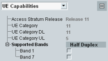

UE Capabilities
To display the most important UE capabilities, select "UE Capabilities" in the field below the event log area.

UE capabilities in the main view
The displayed information comprises the following extracts from the UE capability report:
- General UE capability information
- RF UE capabilities
To maximize the UE capabilities area and display all capability information, press the button to the right.
The UE capabilities characterize the radio access capabilities of the UE. This information is received from the UE during registration. The radio access capabilities are specified in 3GPP TS 36.331.
For a description of the provided capability information, see "Annex: UE Capabilities".